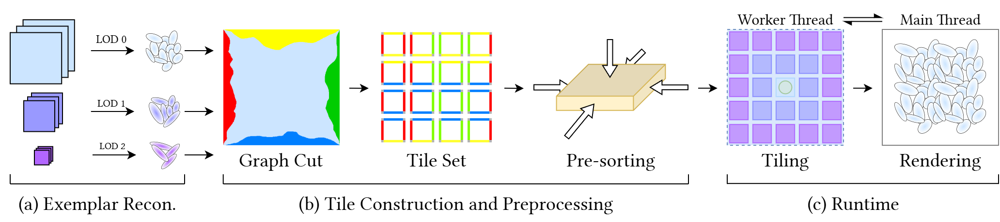

GSWT: Gaussian Splatting Wang Tiles
Abstract
3D Gaussian Splatting (3DGS) has shown strong capability in reconstructing and rendering photorealistic 3D scenes with high efficiency. However, extending 3DGS to synthesize large-scale or infinite terrains from a single captured exemplar—remains an open challenge. In this paper, we propose a tile-based framework that addresses this problem. Our method builds on Wang Tiles, where each tile encodes a local field of Gaussians with boundary constraints to ensure seamless transitions. This enables stochastic yet continuous tiling of Gaussian fields over arbitrary surfaces, allowing for procedural generation of expansive terrains with high spatial diversity. Furthermore, we introduce several rendering optimizations tailored to the unique characteristics of 3DGS Wang tiles, achieving real-time rendering of large-scale 3DGS terrains.
Pipeline
Given multi-view images of an exemplar scene, our goal is to construct Gaussian Splatting Wang Tiles (GSWT) that can be tiled on arbitrary surfaces and rendered in real time with our novel GSWT renderer. An overview of the entire pipeline is illustrated below. We begin by reconstructing the 3DGS exemplar at multiple LODs. For each level, we generate a set of Wang Tiles by sampling the edge and center patches and applying a semantic-aware graph cut algorithm. Prior to rendering, we pre-sort each tile for efficient sort-free splatting, and during runtime, we perform tiling on the fly, allowing efficient GSWT-based terrain synthesis and rendering.

(a) Given the input images, we construct the exemplar multiple times with different Level of Detail
(LOD).
(b) We construct the tile set and preprocess it before rendering.
(c) The surface is tiled at run-time on the worker thread, while the main thread renders each frame.
Full Demo
TBDBibTeX
@inproceedings{Zeng:2025:gswt,
author = {Zeng, Yunfan and Ma, Li and Sander, Pedro V.},
title = {GSWT: Gaussian Splatting Wang Tiles},
year = {2025},
publisher = {Association for Computing Machinery},
booktitle = {SIGGRAPH Asia 2025 Conference Papers},
location = {Hong Kong, China},
series = {SA '25}
}